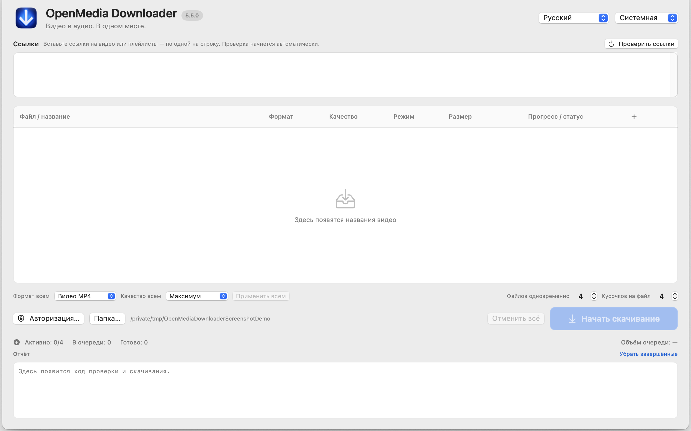

macOS 15+ · Apple Silicon
OpenMedia Downloader
Проверяет поддерживаемые медиассылки и позволяет выбрать разрешённую загрузку или запись трансляции.
Только исходники · 5.5.0Перед запускомТолько исходники: распространение готового приложения пока не согласовано по сторонним компонентам. Сохраняйте только материалы, на которые у вас есть право.
Готового установочного пакета нет. Инструкции описывают настройку из исходников.


Как это работает
- Изучить исходники
- Настроить окружение
- Работать с разрешёнными материалами
Первые шаги
Откройте документацию и статус распространения. Готовый DMG или ZIP приложения сейчас не предлагается.